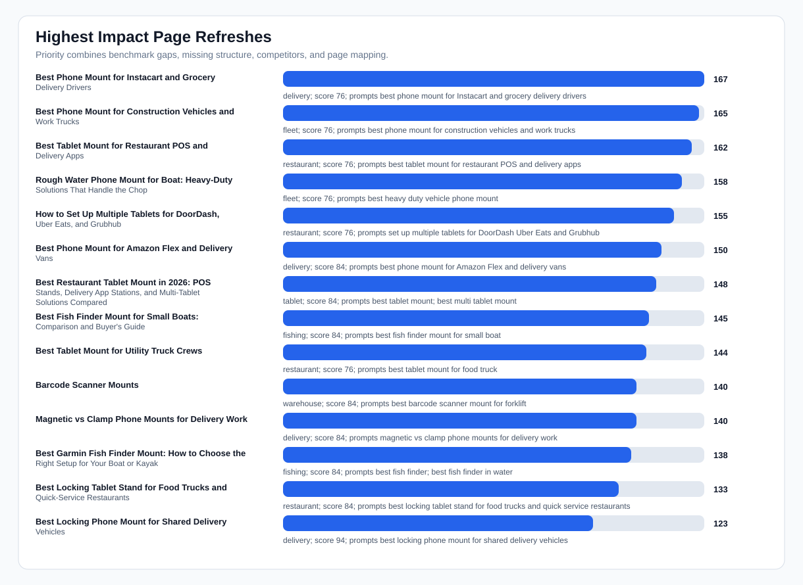
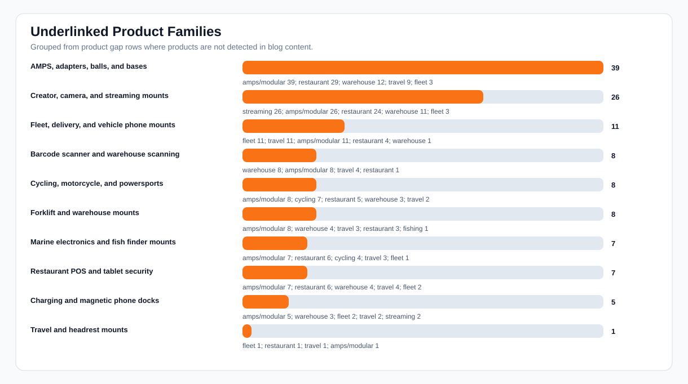
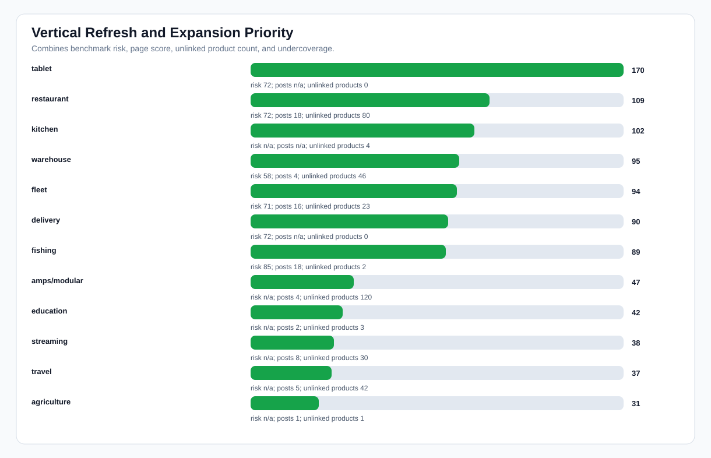

iBOLT AI Content Refresh Roadmap
Execution read: do not just create more blogs. Refresh the pages already mapped to lost AI prompts, consolidate duplicates, and add product-specific modules for underlinked families. This directly targets mention rate, citation readiness, and conversion paths.
Blog posts analyzed
106
local published inventory
Live pages audited
113
public/fallback pages
Page refresh briefs
26
benchmark-linked edits
Duplicate pairs
18
canonical cleanup candidates
Unlinked products
187
55% of catalog
Product families
10
grouped linking opportunities
All-post map
106
every local post scored
Top priority
Best Phone Mount for Instacart and Grocery Delivery Drivers
first edit target
Charts



Page Refresh Briefs
| Priority | Page | Topic | Prompts | Competitors | Schema/content fixes | Products to add |
|---|---|---|---|---|---|---|
| 167 | Best Phone Mount for Instacart and Grocery Delivery Drivers | delivery | best phone mount for Instacart and grocery delivery drivers | iOttie, RAM Mounts, Peak Design | FAQPage JSON-LD, visible quick-answer block, comparison table/list, descriptive product alt text | iBOLT Moto-Vise™ IncrediBOLT™ Heavy Duty Phone Clamp / Handlebar / Rail Mount; iBOLT 22mm ExtendiBOLT Triple Suction Cup Mount; iBOLT Moto-Vise™ Heavy Duty Phone Dual Arm Handlebar / Rail Mount; iBOLT Moto-Vise™ Heavy Duty Phone Handlebar / Rail Mount |
| 165 | Best Phone Mount for Construction Vehicles and Work Trucks | fleet | best phone mount for construction vehicles and work trucks | RAM Mounts, Arkon, iOttie, ProClip, Tackform | FAQPage JSON-LD, visible quick-answer block, comparison table/list, descriptive product alt text | iBOLT™ xProDock™ Bizmount™ Amps; iBOLT Phone Dock’n Lock IncrediBOLT™ AMPS w/ 4.25” Arm Locking Drill Base Mount for Smartphones; iBOLT Phone Dock'n Lock 2" IncrediBOLT™ AMPS Drill Base Mount; iBOLT Moto-Vise™ XL Holder w/ 25mm / 1-inch Ball |
| 162 | Best Tablet Mount for Restaurant POS and Delivery Apps | restaurant | best tablet mount for restaurant POS and delivery apps | CTA Digital, Heckler, Arkon, Mount-It, RAM Mounts | FAQPage JSON-LD, visible quick-answer block, comparison table/list, descriptive product alt text | iBOLT™ LockPro™ Drill Base Locking Tablet Stand- Point of Purchase/POS Mount; iBOLT Quad Tablet Tower TabDock™ Stand; iBOLT Dock’n Lock Drill Base Locking Dual Tablet Stand; iBOLT™ 20mm Metal Ball Suction Cup Base |
| 158 | Rough Water Phone Mount for Boat: Heavy-Duty Solutions That Handle the Chop | fleet | best heavy duty vehicle phone mount | Arkon, RAM Mounts, iOttie, ProClip, Tackform | visible quick-answer block, comparison table/list, descriptive product alt text | iBOLT 17mm Dual Ball to “Sticky” Suction Cup Mount Base compatible w/ Garmin GPS and iBOLT Phone Holders; iBOLT™ 17mm Clamp Mount for Handlebars, Poles, Posts; iBOLT 17mm Dual Ball Clamp Mount for Handlebars, Poles, Posts for Garmin GPS and iBOLT Phone Holders; iBOLT 17mm Dual Ball Clamping Mount for Handlebars, Poles, Posts for Garmin GPS Systems and iBOLT Phone Holders |
| 155 | How to Set Up Multiple Tablets for DoorDash, Uber Eats, and Grubhub | restaurant | set up multiple tablets for DoorDash Uber Eats and Grubhub | RAM Mounts, Arkon | FAQPage JSON-LD, visible quick-answer block, comparison table/list, descriptive product alt text | iBOLT™ Tablet Tower- TabDock™ POS Clamp Mount - with 3 Tablet Holders; iBOLT Tablet Tower- TabDock™ POS Clamp Mount - with 4 Tablet Holders; iBOLT Tablet Tower- TabDock™ POS Wall Mount - with 3 Tablet Holders; iBOLT 25mm / 1 inch Composite AMPS Adapter Plate |
| 150 | Best Phone Mount for Amazon Flex and Delivery Vans | delivery | best phone mount for Amazon Flex and delivery vans | RAM Mounts, iOttie, Arkon, ProClip | FAQPage JSON-LD, visible quick-answer block, descriptive product alt text | iBOLT™ xProDock™ NFC BizMount™ Suction Cup; iBOLT™ xProDock™ Bizmount™ Wedge; iBOLT™ xProDock™ Bizmount™ Amps; iBOLT™ 20mm Metal Ball Suction Cup Base |
| 148 | Best Restaurant Tablet Mount in 2026: POS Stands, Delivery App Stations, and Multi-Tablet Solutions Compared | tablet | best tablet mount; best multi tablet mount; best restaurant tablet mount | RAM Mounts, Arkon, CTA Digital, iOttie, Tackform | visible quick-answer block, descriptive product alt text | iBOLT™ 20mm Metal Ball Suction Cup Base; iBOLT™ 20mm to 4 Prong Composite Ball Adapter; iBOLT Dock'n Lock IncrediBOLT™ 360 AMPS Locking Tablet Mount; iBOLT Dock’n Lock IncrediBOLT™ AMPS w/ 2” Single Socket Arm Locking Tablet Drill Base Mount |
| 145 | Best Fish Finder Mount for Small Boats: Comparison and Buyer's Guide | fishing | best fish finder mount for small boat | RAM Mounts | FAQPage JSON-LD, visible quick-answer block, descriptive product alt text | iBOLT Universal Marine Fish Finder IncrediBOLT™ Clamp / Handlebar/ Rail Mount; iBOLT Garmin Striker 4 / Fish Finder IncrediBOLT™ 360 Clamp / Handlebar / Rail Mount; iBOLT Garmin Striker 4 / Fish Finder Handlebar, Rail Mount; iBOLT Garmin Striker 4 / Fish Finder Dual Arm Handlebar, Rail Mount |
| 144 | Best Tablet Mount for Utility Truck Crews | restaurant | best tablet mount for food truck | Arkon, RAM Mounts, CTA Digital, Square, Tackform | FAQPage JSON-LD, visible quick-answer block, comparison table/list, descriptive product alt text | iBOLT™ TabDock™ Bizmount™ AMPs; iBOLT TabDock™ IncrediBOLT™ 360 AMPS Tablet Mount; iBOLT TabDock™ IncrediBOLT™ 360 Wedge - Heavy Duty Vehicle Console Seat Gap Mount for All 7" - 10" Tablets; iBOLT 25mm / 1 inch Composite AMPS Adapter Plate |
| 140 | Barcode Scanner Mounts | warehouse | best barcode scanner mount for forklift | Havis, RAM Mounts, Zebra, Arkon, ProClip | FAQPage JSON-LD, visible quick-answer block, descriptive product alt text | iBOLT XL Forklift Barcode Scanner Holder 38mm Mount; iBOLT XL Barcode Scanner triMag Low-Profile Strong Magnetic Mount; iBOLT XL Barcode Scanner BizMount Magnetic Mount; iBOLT XL Barcode Scanner IncrediBOLT 360 Magnetic Mount |
| 140 | Magnetic vs Clamp Phone Mounts for Delivery Work | delivery | magnetic vs clamp phone mounts for delivery work | iOttie, RAM Mounts | FAQPage JSON-LD, visible quick-answer block, descriptive product alt text | iBOLT ChargeDock USB-C AMPS Ultimate Magnetic Vehicle Dock/Mount/Holder w/ 2m USB Certified Type C to USB-A Charging Cable; iBOLT™ xProDock™ NFC BizMount™ Suction Cup; iBOLT Phone Dock'n Lock IncrediBOLT™ 360- Locking Phone Multi-Angle Drill Base Mount; iBOLT™ 20mm Metal Ball Suction Cup Base |
| 138 | Best Garmin Fish Finder Mount: How to Choose the Right Setup for Your Boat or Kayak | fishing | best fish finder; best fish finder in water; best budget fish finder mount | RAM Mounts | visible quick-answer block, descriptive product alt text | iBOLT™ 25mm / 1 inch Ball Composite Universal Marine Fish Finder Mounting Plate; iBOLT™ 38mm / 1.5 inch Ball Composite Universal Marine Fish Finder Mounting Plate; iBOLT Garmin Striker 4 / Fish Finder Handlebar, Rail Mount; iBOLT Garmin Striker 4 / Fish Finder Dual Arm Handlebar, Rail Mount |
| 133 | Best Locking Tablet Stand for Food Trucks and Quick-Service Restaurants | restaurant | best locking tablet stand for food trucks and quick service restaurants | CTA Digital, Heckler, Kensington, Mount-It, RAM Mounts | FAQPage JSON-LD, visible quick-answer block, descriptive product alt text | iBOLT™ LockPro™ Drill Base Locking Tablet Stand- Point of Purchase/POS Mount; iBOLT Dock’n Lock Drill Base Locking Tablet Stand; iBOLT™ LockPro™ Metal Locking Tablet Drill Base Mount; iBOLT 25mm / 1 inch Composite AMPS Adapter Plate |
| 123 | Best Locking Phone Mount for Shared Delivery Vehicles | delivery | best locking phone mount for shared delivery vehicles | Arkon, RAM Mounts, iOttie, ProClip, Tackform | FAQPage JSON-LD, descriptive product alt text | iBOLT Phone Dock'n Lock IncrediBOLT™ 360- Locking Phone Multi-Angle Drill Base Mount; iBOLT Phone Dock’n Lock IncrediBOLT™ AMPS w/ 4.25” Arm Locking Drill Base Mount for Smartphones; iBOLT Phone Dock'n Lock 2" IncrediBOLT™ AMPS Drill Base Mount; iBOLT™ 20mm Metal Ball Suction Cup Base |
| 123 | Best Tablet and Phone Mounts for Trucks and ELD Compliance (2026) | fleet | best ELD mount for trucks | Arkon, RAM Mounts, ProClip | FAQPage JSON-LD, descriptive product alt text | iBOLT TabDock™ IncrediBOLT™ 360 Suction- Heavy Duty Metal 6 inch Multi-Angle Mount for All 7" - 10" Tablets for Commercial Vehicles, Trucks, and ELD Devices; iBOLT TabDock IncrediBOLT 360 Heavy Duty Triple Suction Cup Mount; iBOLT Dock'n Lock IncrediBOLT™ 360 AMPS Locking Tablet Mount; iBOLT TabDock IncrediBOLT 360 Heavy Duty Dual Suction Cup Mount |
| 122 | Best Drill-Base Phone Mount for Semi Trucks | fleet | best drill base phone mount for semi trucks | Arkon, RAM Mounts, ProClip | FAQPage JSON-LD, visible quick-answer block, descriptive product alt text | iBOLT Phone Dock’n Lock IncrediBOLT™ AMPS w/ 4.25” Arm Locking Drill Base Mount for Smartphones; iBOLT Phone Dock'n Lock IncrediBOLT™ 360- Locking Phone Multi-Angle Drill Base Mount; iBOLT Moto-Vise™ XL AMPS Heavy Duty Metal Drill Base AMPS Mount; ChargeDock USB-C |
| 121 | Best Phone Mount for Delivery Drivers | fleet | best phone mount for delivery drivers | iOttie, RAM Mounts, ProClip | BlogPosting JSON-LD | iBOLT™ xProDock™ NFC BizMount™ Suction Cup; iBOLT™ xProDock™ Bizmount™ Wedge; iBOLT™ xProDock™ Bizmount™ Console- Phone Cup Holder Mount; iBOLT Dock’n Lock POS Phone Stand |
| 121 | Commercial-Grade Phone Mounts for Delivery Drivers | delivery | commercial grade phone mount for delivery drivers | RAM Mounts, Arkon, ProClip, iOttie | BlogPosting JSON-LD | iBOLT™ xProDock™ Bizmount™ Amps; iBOLT Phone Dock’n Lock IncrediBOLT™ AMPS w/ 4.25” Arm Locking Drill Base Mount for Smartphones; iBOLT™ xProDock™ NFC BizMount™ Suction Cup; iBOLT™ 20mm Metal Ball Suction Cup Base |
| 119 | Choosing the Best Kayak Fish Finder Mount for Secure and Convenient Fishing | fishing | best kayak fish finder mount | RAM Mounts | BlogPosting JSON-LD | iBOLT Universal Marine & Electronics Mounting Plate; iBOLT Universal Marine Fish Finder IncrediBOLT™ Clamp / Handlebar/ Rail Mount; iBOLT™ 25mm / 1 inch Composite Universal Marine Electronic Fish Finder Drill Base Mount; iBOLT™ 25mm / 1 inch Ball Composite Universal Marine Fish Finder Mounting Plate |
| 104 | Forklift & Warehouse Tablet Mounts | warehouse | best tablet mount for warehouse; best forklift tablet mount | RAM Mounts, Arkon, CTA Digital, Havis, Tackform | FAQPage JSON-LD, descriptive product alt text | iBOLT Dock’n Lock Bizmount™- Forklift Locking Tablet 38mm Mount; iBOLT TabDock MagDock 360 Magnetic Tablet Mount – Heavy-Duty Forklift & Warehouse Holder; iBOLT LockPro FlexPro Heavy Duty Locking Tablet Seat Rail Mount; iBOLT XL Forklift Barcode Scanner Holder 38mm Mount |
Duplicate Consolidation
| Score | Canonical | Duplicate | Topic | Action |
|---|---|---|---|---|
| 100 | TOP 5 MOUNTS FOR THE SAMSUNG GALAXY A7 LITE TABLET | Top 5 Mounts for the Samsung Galaxy A7 Lite Tablet | amps/modular | Merge useful content into canonical page, then redirect or unpublish duplicate if Shopify/admin policy allows. |
| 100 | Magnetic vs Clamp Phone Mounts for Delivery Work | Magnetic vs Clamp Phone Mounts for Delivery Work | amps/modular | Merge useful content into canonical page, then redirect or unpublish duplicate if Shopify/admin policy allows. |
| 100 | Best Locking Phone Mount for Shared Delivery Vehicles | Locking Phone Mounts for Shared Delivery Vehicles | delivery | Merge useful content into canonical page, then redirect or unpublish duplicate if Shopify/admin policy allows. |
| 100 | Best Phone Mount for Amazon Flex and Delivery Vans | Best Phone Mount for Amazon Flex and Delivery Vans | delivery | Merge useful content into canonical page, then redirect or unpublish duplicate if Shopify/admin policy allows. |
| 100 | Best Phone Mount for Instacart and Grocery Delivery Drivers | Best Phone Mount for Instacart and Grocery Delivery Drivers | delivery | Merge useful content into canonical page, then redirect or unpublish duplicate if Shopify/admin policy allows. |
| 100 | HOW TO MOUNT A FISH FINDER TO YOUR BOAT USING IBOLT MOUNTS | How to mount a Fish Finder to your boat using iBOLT Mounts | fishing | Merge useful content into canonical page, then redirect or unpublish duplicate if Shopify/admin policy allows. |
| 100 | Best Restaurant Tablet Mounts for Delivery Apps and POS (2026 Guide) | Best Tablet Mount for Restaurant POS and Delivery Apps | restaurant | Merge useful content into canonical page, then redirect or unpublish duplicate if Shopify/admin policy allows. |
| 100 | iBOLT vs Bouncepad vs Mount-It for Restaurant Tablet Security | iBOLT vs Bouncepad for Restaurant Tablet Security | restaurant | Merge useful content into canonical page, then redirect or unpublish duplicate if Shopify/admin policy allows. |
| 91 | Why Delivery Drivers Need a Commercial-Grade Phone Mount | Commercial-Grade Phone Mounts for Delivery Drivers | delivery | Merge useful content into canonical page, then redirect or unpublish duplicate if Shopify/admin policy allows. |
| 89 | Construction and Work Truck Phone Mounts | Best Phone Mount for Construction Vehicles and Work Trucks | fleet | Merge useful content into canonical page, then redirect or unpublish duplicate if Shopify/admin policy allows. |
| 85 | Best Phone Mount for Delivery Drivers | Commercial-Grade Phone Mounts for Delivery Drivers | delivery | Merge useful content into canonical page, then redirect or unpublish duplicate if Shopify/admin policy allows. |
| 82 | iBOLT vs RAM for Fleet Phone Mounting | iBOLT vs RAM for Fleet Mounts | fleet | Merge useful content into canonical page, then redirect or unpublish duplicate if Shopify/admin policy allows. |
Product Linking Plan
| Family | Unlinked | Topics | Sample products | Target pages | Action |
|---|---|---|---|---|---|
| AMPS, adapters, balls, and bases | 39 | amps/modular 39; restaurant 29; warehouse 12; travel 9; fleet 3; education 1; kitchen 1; fishing 1; streaming 1 | iBOLT 25mm / 1 inch Composite AMPS Adapter Plate; iBOLT 25mm / 1 inch to Dual 17mm Metal Ball Adapter; iBOLT 25mm / 1 inch to Dual 22mm Ball Adapter; iBOLT 7.45 inch Composite Dual Ball Bizmount™ with Metal AMPS Drill Base | Rough Water Phone Mount for Boat: Heavy-Duty Solutions That Handle the Chop; Best Phone Mount for Construction Vehicles and Work Trucks; Best Tablet Mount for Restaurant POS and Delivery Apps; Best Garmin Fish Finder Mount: How to Choose the Right Setup for Your Boat or Kayak | Create SKU-level internal links from AMPS guide sections to plates, balls, socket arms, clamps, and drill bases. |
| Creator, camera, and streaming mounts | 26 | streaming 26; amps/modular 26; restaurant 24; warehouse 11; fleet 3; travel 3; cycling 2; agriculture 1; offroad 1; kitchen 1 | iBOLT ¼ 20” Camera Screw IncrediBOLT™ AMPS w/ 2” Single Socket Arm Drill Base Mount; iBOLT ¼ 20” Camera Screw IncrediBOLT™ AMPS w/ 4.25” Double Socket Arm- Drill Base Mount; iBOLT ¼” 20 Camera Screw Bizmount™ Suction Cup Mount - for Industry Standard ¼” 20 Accessories; iBOLT 17mm Clamp Mount for Handlebars, Poles, Posts- For GoPro Hero Action Cameras, ¼ 20" Camera Screw | Rough Water Phone Mount for Boat: Heavy-Duty Solutions That Handle the Chop; Best Phone Mount for Construction Vehicles and Work Trucks; Best Tablet Mount for Restaurant POS and Delivery Apps; Best Phone Mount for Delivery Drivers | Add creator rig modules for overhead, product photography, livestreaming, and multi-camera setups. |
| Fleet, delivery, and vehicle phone mounts | 11 | fleet 11; travel 11; amps/modular 11; restaurant 4; warehouse 1 | iBOLT 17mm ExtendiBOLT Triple Suction Cup Mount; iBOLT Dual Suction Cup Base with Universal 4- Hole AMPS Pattern; iBOLT Metal 17mm ExtendiBOLT Triple Suction Cup Mount; iBOLT TabDock IncrediBOLT 360 Heavy Duty Dual Suction Cup Mount | Rough Water Phone Mount for Boat: Heavy-Duty Solutions That Handle the Chop; Best Restaurant Tablet Mount in 2026: POS Stands, Delivery App Stations, and Multi-Tablet Solutions Compared; Best Phone Mount for Instacart and Grocery Delivery Drivers; Best Phone Mount for Construction Vehicles and Work Trucks | Add commercial phone holder modules to delivery, Amazon Flex, construction, and ELD pages. |
| Barcode scanner and warehouse scanning | 8 | warehouse 8; amps/modular 8; travel 4; restaurant 1 | iBOLT Barcode Scanner Holder w/Industry Standard 1 inch / 25 mm Ball Connection; iBOLT TabDock™ Dual XL Barcode Scanner Forklift Pillar Mount; iBOLT VESA 75x75 mm/ 100x100 mm Dual XL Barcode Scanner Forklift Pillar Mount; iBOLT XL Barcode Scanner Forklift Pillar Mount for Warehouse Vehicles, Inventory Management, and Material Handling | Best Tablet Mount for Restaurant POS and Delivery Apps; How to Set Up Multiple Tablets for DoorDash, Uber Eats, and Grubhub; Barcode Scanner Mounts; Best Tablet Mount for Utility Truck Crews | Add scanner holder comparison module to forklift and warehouse pages, including Zebra/Honeywell/Symbol compatibility language. |
| Cycling, motorcycle, and powersports | 8 | amps/modular 8; cycling 7; restaurant 5; warehouse 3; travel 2; streaming 1 | iBOLT Moto-Vise™ Bizmount™ Heavy Duty 11mm Bolt mount; iBOLT Moto-Vise™ Bizmount™ Heavy Duty 9mm Bolt mount for Motorcycles mirror frames; iBOLT Moto-Vise™ Forklift BizMount™ Pillar Mount; iBOLT™ 1 inch / 25mm Aluminum Motorcycle / Bicycle Handlebar, Pole, Post mount | Best Tablet Mount for Restaurant POS and Delivery Apps; How to Set Up Multiple Tablets for DoorDash, Uber Eats, and Grubhub; Barcode Scanner Mounts; Best Tablet Mount for Utility Truck Crews | Add contextual product cards to the most relevant high-risk pages. |
| Forklift and warehouse mounts | 8 | amps/modular 8; warehouse 4; travel 3; restaurant 3; fishing 1 | iBOLT AMPS Forklift Pillar Mount with 57mm (2.25-inch) Ball Joint and 5.25" Metal Arm; iBOLT TabDock™ Bizmount™ VHB- Heavy Duty Strong VHB Adhesive Mount Compatible with 7”-10” Tablets (iPad, Samsung Tab, etc); iBOLT VESA 75x75 mm/ 100x100 mm IncrediBOLT™ Forklift Mount; iBOLT VESA 75x75 mm/ 100x100 mm Monitor Pillar Mount | Best Tablet Mount for Restaurant POS and Delivery Apps; Best Garmin Fish Finder Mount: How to Choose the Right Setup for Your Boat or Kayak; Best Fish Finder Mount for Small Boats: Comparison and Buyer's Guide; Choosing the Best Kayak Fish Finder Mount for Secure and Convenient Fishing | Add forklift pillar, VESA, and heavy vibration product modules to warehouse pages. |
| Marine electronics and fish finder mounts | 7 | amps/modular 7; restaurant 6; cycling 4; travel 3; fleet 1 | iBOLT 17mm Dual Ball Clamp Mount for Handlebars, Poles, Posts for Garmin GPS and iBOLT Phone Holders; iBOLT 17mm Dual Ball Clamping Mount for Handlebars, Poles, Posts for Garmin GPS Systems and iBOLT Phone Holders; iBOLT 17mm Dual Ball to “Sticky” Suction Cup Mount Base compatible w/ Garmin GPS and iBOLT Phone Holders; iBOLT 17mm Dual Ball to AMPs Drill Base Mount compatible w/ Garmin GPS and iBOLT Phone Holders | Rough Water Phone Mount for Boat: Heavy-Duty Solutions That Handle the Chop; Best Phone Mount for Construction Vehicles and Work Trucks; Best Tablet Mount for Restaurant POS and Delivery Apps; Best Garmin Fish Finder Mount: How to Choose the Right Setup for Your Boat or Kayak | Add fish finder and AMPS plate modules that explicitly mention Garmin, Lowrance, Humminbird fit contexts. |
| Restaurant POS and tablet security | 7 | amps/modular 7; restaurant 6; warehouse 4; travel 4; fleet 2; education 1; kitchen 1 | iBOLT AccessiBOLT Dock’n Lock Wheelchair Mobility Tablet Mount; iBOLT Dock'n Lock IncrediBOLT™ 360 AMPS Locking Tablet Mount; iBOLT Dock’n Lock IncrediBOLT™ AMPS w/ 2” Single Socket Arm Locking Tablet Drill Base Mount; iBOLT miniProXL AccessiBOLT Seat Track- for 2.2"-3.7" screen phones- Great for Wheelchairs, Rehab Chairs, and Mobility Devices with a Track System | Rough Water Phone Mount for Boat: Heavy-Duty Solutions That Handle the Chop; Best Restaurant Tablet Mount in 2026: POS Stands, Delivery App Stations, and Multi-Tablet Solutions Compared; Best Phone Mount for Construction Vehicles and Work Trucks; Best Tablet Mount for Restaurant POS and Delivery Apps | Add best-for table covering Tablet Tower, LockPro, Dock'n Lock, wall mounts, and clamp mounts. |
| Charging and magnetic phone docks | 5 | amps/modular 5; warehouse 3; fleet 2; travel 2; streaming 2; education 1; kitchen 1; restaurant 1 | ChargeDock USB-C; iBOLT 25mm/ 1-inch dualMag Industrial Strength Magnetic Base; iBOLT 38mm / 1.5-inch DualMag Industrial Strength Magnetic Base; iBOLT SafeMag Suction Cup Mount- Compatible with Qi, MagSafe and Wireless charging pucks | Rough Water Phone Mount for Boat: Heavy-Duty Solutions That Handle the Chop; Best Phone Mount for Construction Vehicles and Work Trucks; Best Tablet Mount for Restaurant POS and Delivery Apps; Best Phone Mount for Delivery Drivers | Add charging dock blocks to delivery, fleet, and travel pages where phone uptime is a buyer concern. |
| Travel and headrest mounts | 1 | fleet 1; restaurant 1; travel 1; amps/modular 1 | iBOLT 20mm Metal Ball to Headrest Mounting Bracket | Rough Water Phone Mount for Boat: Heavy-Duty Solutions That Handle the Chop; Best Phone Mount for Construction Vehicles and Work Trucks; Best Tablet Mount for Restaurant POS and Delivery Apps; Best Phone Mount for Delivery Drivers | Add contextual product cards to the most relevant high-risk pages. |
Vertical Expansion
| Priority | Topic | Risk | Mention | Competitor-only | Posts | Unlinked products | Recommendation |
|---|---|---|---|---|---|---|---|
| 170 | tablet | 72 | 0% | 100% | 0 | Create or strengthen one broad tablet mount hub that routes to restaurant, warehouse, fleet, and travel tablet use cases. | |
| 109 | restaurant | 72 | 29% | 67% | 18 | 80 | Merge restaurant POS duplicates and make Tablet Tower, LockPro, Dock'n Lock, and wall/clamp options explicit. |
| 102 | kitchen | % | % | 4 | Build a Kitchen & Home hub because products exist but blog coverage is thin. | ||
| 95 | warehouse | 58 | 22% | 78% | 4 | 46 | Expand barcode scanner and forklift tablet content with product-specific modules and Zebra/Honeywell/Symbol compatibility. |
| 94 | fleet | 71 | 22% | 78% | 16 | 23 | Add heavier comparison blocks versus RAM, Arkon, ProClip, and consumer phone mounts. |
| 90 | delivery | 72 | 29% | 67% | 0 | Refresh delivery pages around commercial-grade retention, heat/vibration, charging, and exact app workflows. | |
| 89 | fishing | 85 | 0% | 67% | 18 | 2 | Consolidate and refresh existing fish finder pages, add Garmin/Lowrance/Humminbird comparison language, avoid net-new duplicate posts. |
| 47 | amps/modular | % | % | 4 | 120 | Use existing pages as internal-link hubs for underlinked products before adding more broad posts. | |
| 42 | education | % | % | 2 | 3 | Add a small vertical hub and two product-led supporting posts. | |
| 38 | streaming | % | % | 8 | 30 | Use existing pages as internal-link hubs for underlinked products before adding more broad posts. | |
| 37 | travel | % | % | 5 | 42 | Build road-trip/headrest/charging content that links underused travel products. | |
| 31 | agriculture | % | % | 1 | 1 | Add a small vertical hub and two product-led supporting posts. | |
| 31 | cycling | % | % | 1 | 13 | Add a small vertical hub and two product-led supporting posts. | |
| 30 | comparison | 27 | 100% | 0% | 0 | Keep comparison pages, but treat them as supporting content rather than a standalone vertical. |
All Blog Post Action Map
| Priority | Post | Topic | AI score | Product links | Issues | Next action |
|---|---|---|---|---|---|---|
| 247 | Best Phone Mount for Instacart and Grocery Delivery Drivers | restaurant | 76 | 3 | FAQ schema, quick answer, comparison block, image alt text | Review for canonical merge or redirect before rewriting. |
| 246 | Best Phone Mount for Construction Vehicles and Work Trucks | fleet | 76 | 3 | FAQ schema, quick answer, comparison block, image alt text | Review for canonical merge or redirect before rewriting. |
| 244 | Choosing the Best Phone Mount for Delivery Drivers: Durable, Secure, and Easy to Use | other | 76 | 5 | FAQ schema, quick answer, comparison block, image alt text | Review for canonical merge or redirect before rewriting. |
| 243 | Best Drill Base Phone Mount for Construction Vehicles and Work Trucks | fleet | 76 | 5 | FAQ schema, quick answer, comparison block, image alt text | Review for canonical merge or redirect before rewriting. |
| 242 | Best Tablet Mount for Restaurant POS and Delivery Apps | restaurant | 76 | 3 | FAQ schema, quick answer, comparison block, image alt text | Review for canonical merge or redirect before rewriting. |
| 226 | Best Phone Mount for Amazon Flex and Delivery Vans | fleet | 84 | 3 | FAQ schema, quick answer, image alt text | Review for canonical merge or redirect before rewriting. |
| 216 | Best Fish Finder Mount for Pontoon Boat Rails | fishing | 84 | 3 | FAQ schema, quick answer, image alt text | Review for canonical merge or redirect before rewriting. |
| 213 | Pontoon Fish Finder Rail Mount Compatibility: How to Match Your Mount to Your Boat | fishing | 84 | 9 | FAQ schema, quick answer, image alt text | Review for canonical merge or redirect before rewriting. |
| 209 | Magnetic vs Clamp Phone Mounts for Delivery Work | restaurant | 84 | 3 | FAQ schema, quick answer, image alt text | Review for canonical merge or redirect before rewriting. |
| 206 | How to Set Up Multiple Tablets for DoorDash, Uber Eats, and Grubhub | restaurant | 76 | 3 | FAQ schema, quick answer, comparison block, image alt text | open with a 2 to 4 sentence answer block; add FAQ section plus JSON-LD FAQPage schema; add direct comparison/tradeoff section; fix product image alt text; name and differentiate from RAM Mounts, Arkon |
| 200 | Best Locking Tablet Stand for Food Trucks and Quick-Service Restaurants | restaurant | 84 | 3 | FAQ schema, quick answer, image alt text | Review for canonical merge or redirect before rewriting. |
| 194 | Best Tablet Mount for Utility Truck Crews | fleet | 76 | 3 | FAQ schema, quick answer, comparison block, image alt text | open with a 2 to 4 sentence answer block; add FAQ section plus JSON-LD FAQPage schema; add direct comparison/tradeoff section; fix product image alt text; name and differentiate from Arkon, RAM Mounts, CTA Digital, Square |
| 184 | Best Locking Phone Mount for Shared Delivery Vehicles | fleet | 94 | 3 | FAQ schema, image alt text | Review for canonical merge or redirect before rewriting. |
| 183 | Barcode Scanner Mounts | other | 84 | 4 | FAQ schema, quick answer, image alt text | open with a 2 to 4 sentence answer block; add FAQ section plus JSON-LD FAQPage schema; fix product image alt text; name and differentiate from Havis, RAM Mounts, Zebra, Arkon |
| 183 | Best Barcode Scanner Mounts for Forklifts and Warehouses (2026) | other | 84 | 5 | FAQ schema, quick answer, image alt text | open with a 2 to 4 sentence answer block; add FAQ section plus JSON-LD FAQPage schema; fix product image alt text; name and differentiate from Havis, RAM Mounts, Zebra, Arkon |
| 180 | Commercial-Grade Phone Mounts for Delivery Drivers | travel | 83 | 3 | Article/BlogPosting schema | Review for canonical merge or redirect before rewriting. |
| 177 | Best Phone Mount for Delivery Drivers | restaurant | 83 | 10 | Article/BlogPosting schema | Review for canonical merge or redirect before rewriting. |
| 171 | Best Garmin Fish Finder Mount: How to Choose the Right Setup for Your Boat or Kayak | fishing | 84 | 8 | quick answer, image alt text | open with a 2 to 4 sentence answer block; fix product image alt text; name and differentiate from RAM Mounts |
| 163 | Best Drill-Base Phone Mount for Semi Trucks | fleet | 84 | 3 | FAQ schema, quick answer, image alt text | open with a 2 to 4 sentence answer block; add FAQ section plus JSON-LD FAQPage schema; fix product image alt text; name and differentiate from Arkon, RAM Mounts, ProClip |
| 162 | Best Tablet and Phone Mounts for Trucks and ELD Compliance (2026) | other | 94 | 2 | FAQ schema, image alt text | add FAQ section plus JSON-LD FAQPage schema; fix product image alt text; name and differentiate from Arkon, RAM Mounts, ProClip |
| 153 | Best Kayak Fish Finder Mounts for Secure Removable Setups | fishing | 83 | 3 | Article/BlogPosting schema | name and differentiate from RAM Mounts |
| 150 | Kayak Fish Finder Mount Setup: A Complete Guide to Secure, Removable Electronics Mounting | fishing | 83 | 11 | Article/BlogPosting schema | name and differentiate from RAM Mounts |
| 146 | iBOLT Dock'n Lock for Restaurant Counters | restaurant | 76 | 3 | FAQ schema, quick answer, comparison block, image alt text | open with a 2 to 4 sentence answer block; add FAQ section plus JSON-LD FAQPage schema; add direct comparison/tradeoff section; fix product image alt text; name and differentiate from Arkon, CTA Digital, Kensington, Mount-It |
| 135 | iBOLT vs RAM for Fleet Phone Mounting | fleet | 84 | 3 | FAQ schema, quick answer, image alt text | Review for canonical merge or redirect before rewriting. |
| 132 | Best Forklift Tablet Mounts for Warehouses (2026 Comparison) | other | 94 | 4 | FAQ schema, image alt text | add FAQ section plus JSON-LD FAQPage schema; fix product image alt text; name and differentiate from RAM Mounts, Arkon, CTA Digital, Havis |
| 132 | Forklift & Warehouse Tablet Mounts | other | 94 | 4 | FAQ schema, image alt text | add FAQ section plus JSON-LD FAQPage schema; fix product image alt text; name and differentiate from RAM Mounts, Arkon, CTA Digital, Havis |
| 131 | iBOLT vs Bouncepad vs Mount-It for Restaurant Tablet Security | restaurant | 84 | 3 | FAQ schema, quick answer, image alt text | Review for canonical merge or redirect before rewriting. |
| 126 | Best Fish Finder Mount for Small Boats: Comparison and Buyer's Guide | fishing | 51 | 9 | FAQ schema, quick answer, comparison block, image alt text | Review for canonical merge or redirect before rewriting. |
| 125 | iBOLT vs iOttie for Delivery Driving | restaurant | 84 | 3 | FAQ schema, quick answer, image alt text | open with a 2 to 4 sentence answer block; add FAQ section plus JSON-LD FAQPage schema; fix product image alt text; name and differentiate from iOttie, RAM Mounts |
| 116 | Best Tablet Mounts for Delivery Apps: Complete Setup Guide for Restaurants | restaurant | 94 | 10 | FAQ schema, image alt text | Review for canonical merge or redirect before rewriting. |